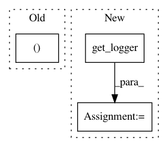

8a9bc1ce33166050e8f21b39e2187e10d7330f3e,mmdet/utils/logger.py,,get_root_logger,#Any#Any#,6
Before Change
format_str = "%(asctime)s - %(name)s - %(levelname)s - %(message)s"
logging.basicConfig(format=format_str, level=log_level)
rank, _ = get_dist_info()
if rank != 0:
logger.setLevel("ERROR")
elif log_file is not None:
After Change
def get_root_logger(log_file=None, log_level=logging.INFO):
logger = get_logger(name="mmdet", log_file=log_file, log_level=log_level)
return logger
In pattern: SUPERPATTERN
Frequency: 4
Non-data size: 3
Instances
Project Name: open-mmlab/mmdetection
Commit Name: 8a9bc1ce33166050e8f21b39e2187e10d7330f3e
Time: 2020-05-04
Author: xvjiarui0826@gmail.com
File Name: mmdet/utils/logger.py
Class Name:
Method Name: get_root_logger
Project Name: brian-team/brian2
Commit Name: 03e1f8ccf888e2b1c5ad37206d1fe172129aad4e
Time: 2018-03-20
Author: marcel.stimberg@inserm.fr
File Name: brian2/__init__.py
Class Name:
Method Name:
Project Name: automl/auto-sklearn
Commit Name: 838f3aa207070d7f8f02f529a5f45076e0caab66
Time: 2015-10-01
Author: feurerm@informatik.uni-freiburg.de
File Name: autosklearn/util/submit_process.py
Class Name:
Method Name: run_smac
Project Name: automl/auto-sklearn
Commit Name: 0544c830f202e7c243feca26edd354e676db8a63
Time: 2015-09-23
Author: feurerm@informatik.uni-freiburg.de
File Name: autosklearn/automl.py
Class Name:
Method Name: _get_logger